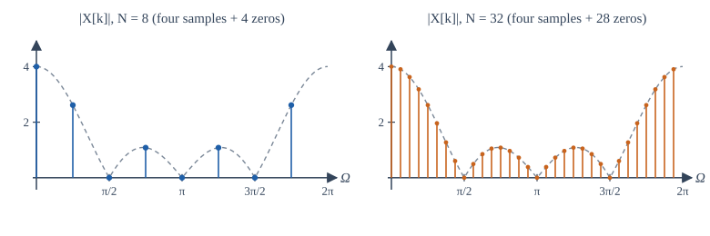
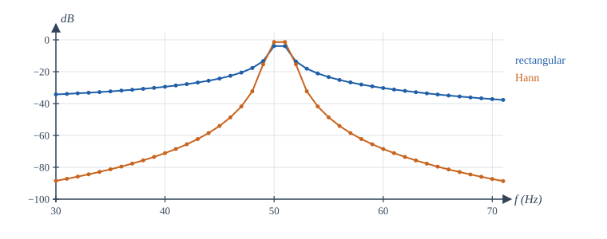
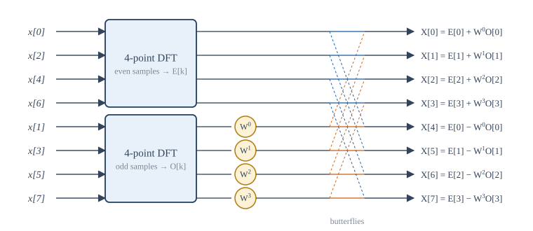

Chapter 8: The DFT and the FFT¶
The Fourier transform a computer can calculate, and the algorithm that makes it fast
Learning outcomes
After this chapter you should be able to:
- define the \(N\)-point DFT and its inverse, and compute small DFTs by hand;
- relate the DFT to samples of the DTFT and to the coefficients of the DTFS;
- use circular shift and circular convolution, and use zero-padding to obtain linear convolution;
- convert DFT bin numbers to frequencies in hertz, and explain resolution, zero-padding, leakage and windowing;
- derive the radix-2 decimation-in-time FFT and count its operations;
- analyse real signals with
np.fft.
8.1 Why we need the DFT¶
The DTFT of Chapter 7 is a function of a continuous frequency, and it is defined by an infinite sum. A computer can do neither: it holds a finite list of numbers and can produce only a finite list of numbers. The discrete Fourier transform (DFT) is the version of Fourier analysis that is finite in both domains. It takes \(N\) samples and returns \(N\) frequency values, exactly, with no approximation in the transform itself. Combined with a fast algorithm, the fast Fourier transform (FFT), it is the workhorse of digital signal processing: spectrum analysers, audio and image compression, radar, wireless communication and the solution of differential equations all use it.
8.2 Definition¶
For a sequence \(x[n]\), \(n = 0, 1, \ldots, N-1\), the \(N\)-point DFT is
and the inverse DFT is
It is customary to write \(W_N = e^{-j2\pi/N}\), a complex \(N\)th root of unity, so that \(X[k] = \sum_n x[n]W_N^{kn}\). The index \(k\) is the bin number. The inverse formula works because the vectors \(e^{j2\pi kn/N}\), \(k = 0, \ldots, N-1\), are orthogonal, with the same finite geometric sum that made the DTFS work in Section 5.8. Indeed, comparing definitions, the DFT is \(N\) times the DTFS of the periodic sequence obtained by repeating \(x[n]\) with period \(N\): \(X[k] = N a_k\).
Example 8.1 A four-point DFT by hand
Compute the DFT of \(x = [1, 2, 0, -1]\). For \(N = 4\), \(W_4 = e^{-j\pi/2} = -j\), so \(W_4^{kn}\) takes only the values \(1, -j, -1, j\).
Notice \(X[3] = X[1]^*\): for a real sequence, \(X[N - k] = X^*[k]\). \(X[0]\) is the sum of the samples (the DC term), and \(X[2]\), at \(k = N/2\), is the alternating sum \(x[0] - x[1] + x[2] - x[3]\).
In matrix form the DFT is \(\mathbf{X} = \mathbf{W}\mathbf{x}\), where \(\mathbf{W}\) is the \(N\times N\) matrix with entries \(W_N^{kn}\). The inverse matrix is \(\frac{1}{N}\mathbf{W}^*\) (the conjugate, scaled). Computing the DFT straight from the definition needs \(N^2\) complex multiplications.
8.3 What the DFT values mean¶
Samples of the DTFT¶
If \(x[n]\) is zero outside \(0 \le n \le N-1\), its DTFT is \(X(e^{j\Omega}) = \sum_{n=0}^{N-1}x[n]e^{-j\Omega n}\). Setting \(\Omega = 2\pi k/N\) gives the DFT. So
the DFT samples the DTFT at \(N\) equally spaced frequencies around the unit circle, from \(\Omega = 0\) up to (but not including) \(2\pi\). Bins \(k\) near 0 and near \(N\) are low frequencies; bins near \(N/2\) are high. Bins \(k > N/2\) represent negative frequencies \(\Omega = 2\pi k/N - 2\pi\), which is why np.fft.fftfreq lists them as negative.

Frequencies in hertz¶
When \(x[n]\) was obtained by sampling at \(f_s\) samples per second, bin \(k\) corresponds to the frequency
The bin spacing is \(\Delta f = f_s/N = 1/(NT_s)\), the reciprocal of the duration of the record. One second of data gives 1 Hz bins, whatever the sampling rate. The highest frequency represented is \(f_s/2\), at bin \(N/2\).
Example 8.2 Locating a tone
A signal is sampled at 8 kHz and a 256-point DFT is taken. A peak appears in bin 40. What is its frequency?
\(\Delta f = 8000/256 = 31.25\) Hz, so bin 40 is at \(40 \times 31.25 = 1250\) Hz. Because the signal is real, a matching peak appears in bin \(256 - 40 = 216\), which represents \(-1250\) Hz.
Zero-padding¶
Appending zeros to a sequence before taking the DFT (Figure 8.1, right) gives more samples of the same DTFT, so the plot looks smoother and peaks can be located more precisely. It does not improve the ability to separate two close frequencies, called the resolution. Resolution is set by the length of the actual data: the DTFT of \(L\) samples cannot show details narrower than about \(2\pi/L\), however finely it is sampled.
8.4 Properties of the DFT¶
The DFT inherits the properties of the DTFS, with one essential twist: because both \(x[n]\) and \(X[k]\) are implicitly periodic with period \(N\), shifts are circular. A circular shift by \(m\) moves each sample \(m\) places to the right, and samples that fall off the end reappear at the beginning. We write \(x[(n - m)_N]\), where \((\cdot)_N\) means "modulo \(N\)".
| Property | Sequence (length \(N\)) | DFT |
|---|---|---|
| Linearity | \(ax[n] + by[n]\) | \(aX[k] + bY[k]\) |
| Circular time shift | \(x[(n - m)_N]\) | \(W_N^{km}X[k]\) |
| Circular frequency shift | \(W_N^{-ln}x[n]\) | \(X[(k - l)_N]\) |
| Circular convolution | \(\sum_{m=0}^{N-1}x[m]\,y[(n - m)_N]\) | \(X[k]\,Y[k]\) |
| Multiplication | \(x[n]\,y[n]\) | \(\frac{1}{N}\sum_{l=0}^{N-1}X[l]\,Y[(k - l)_N]\) |
| Real sequence | \(x\) real | \(X[(N - k)_N] = X^*[k]\) |
| Parseval | \(\sum_{n=0}^{N-1}\lvert x[n]\rvert^2\) | \(\frac{1}{N}\sum_{k=0}^{N-1}\lvert X[k]\rvert^2\) |
Table 8.1. Properties of the N-point DFT.
Circular versus linear convolution¶
Multiplying two DFTs corresponds to circular convolution, not the linear convolution of Chapter 4. In circular convolution, the tail of the linear result that would extend beyond \(N - 1\) wraps around and adds to the beginning. For example, the linear convolution of \([1, 2, 3]\) with \([1, 1, 1]\) is \([1, 3, 6, 5, 3]\); the 3-point circular convolution adds the last two values onto the first two, giving \([1 + 5, 3 + 3, 6] = [6, 6, 6]\).
To get linear convolution from DFTs, pad both sequences with zeros to a length of at least \(L + M - 1\), where \(L\) and \(M\) are their lengths. Then the linear result fits in the frame and nothing wraps around. This is the basis of fast convolution: for long sequences, computing two FFTs, a product and an inverse FFT is much faster than evaluating the convolution sum directly. Very long signals, such as audio streams, are cut into blocks and convolved block by block (the overlap-add and overlap-save methods).
8.5 Leakage and windows¶
Suppose a signal contains a single sinusoid. If an exact whole number of its cycles fits into the \(N\)-sample record, its frequency falls exactly on a bin, and the DFT shows a single clean line (and its mirror). If not, the energy leaks into all the other bins. The reason is that the DFT implicitly repeats the record periodically; when the record does not hold whole cycles, the repetition has a jump at the joins, and a jump needs many frequencies. Equivalently, taking \(N\) samples multiplies the signal by a rectangular window, which convolves its spectrum with the Dirichlet kernel of Example 7.3, whose side lobes decay slowly.
The remedy is to multiply the record by a window that tapers smoothly to zero at both ends before taking the DFT. The Hann window \(w[n] = 0.5 - 0.5\cos\!\left(\frac{2\pi n}{N - 1}\right)\) (in the symmetric form used by np.hanning) is a common choice. Its side lobes are far lower than those of the rectangle, so distant leakage drops dramatically. The price is a wider main lobe, which spreads each tone over two or three bins and slightly worsens resolution. Chapter 12 uses the same windows to design filters.

Reading amplitudes from a DFT
For a real sinusoid of amplitude \(A\) that falls exactly on bin \(k\) (not 0 or \(N/2\)), \(|X[k]| = AN/2\). So the amplitude is \(2|X[k]|/N\). With a window \(w\), divide by \(\sum w[n]\) instead of \(N\). If the tone falls between bins, the peak reads low (by up to about 36% with no window, as the program in Section 8.7 shows), which is another reason to window.
8.6 The fast Fourier transform¶
The direct DFT costs \(N^2\) complex multiplications. For \(N = 1024\) that is over a million; for the \(N = 2^{20}\) points of a long recording, about \(10^{12}\). The FFT computes exactly the same numbers with about \(\frac{N}{2}\log_2 N\) multiplications, which for \(N = 1024\) is 5,120, two hundred times fewer, and for \(N = 2^{20}\) is about ten million, a hundred thousand times fewer. The algorithm was published by Cooley and Tukey in 1965 and is one of the most important algorithms of the twentieth century; the essential idea had been used, by hand, much earlier.
Decimation in time¶
Let \(N\) be a power of 2. Split the sum into even-indexed and odd-indexed samples, \(n = 2r\) and \(n = 2r + 1\):
Since \(W_N^2 = e^{-j4\pi/N} = W_{N/2}\), each sum is an \(N/2\)-point DFT:
where \(E\) is the DFT of the even samples and \(O\) the DFT of the odd samples. Both \(E\) and \(O\) have period \(N/2\), and \(W_N^{k + N/2} = -W_N^{k}\), so for \(k = 0, 1, \ldots, N/2 - 1\):
This pair of equations is the butterfly: one multiplication by the twiddle factor \(W_N^k\), one addition and one subtraction produce two outputs.

Counting operations¶
One \(N\)-point DFT has been replaced by two \(N/2\)-point DFTs plus \(N/2\) butterflies. Each half can be split in the same way, and so on until the DFTs have one point (and a one-point DFT is the sample itself). There are \(\log_2 N\) stages, each with \(N/2\) butterflies, for a total of \(\frac{N}{2}\log_2 N\) complex multiplications.
| \(N\) | Direct DFT, \(N^2\) | FFT, \(\frac{N}{2}\log_2 N\) | Ratio |
|---|---|---|---|
| 8 | 64 | 12 | 5 |
| 256 | 65,536 | 1,024 | 64 |
| 1,024 | 1,048,576 | 5,120 | 205 |
| 65,536 | about \(4.3\times10^9\) | 524,288 | 8,192 |
Table 8.2. Complex multiplications for the direct DFT and the radix-2 FFT.
The splitting reorders the input: after all the stages, the samples enter in bit-reversed order (for \(N = 8\): 0, 4, 2, 6, 1, 5, 3, 7). Other FFT algorithms split the output instead (decimation in frequency), use other radices, or handle lengths that are not powers of two. Library routines such as np.fft.fft choose among them automatically and work for any \(N\), though lengths with only small prime factors are fastest.
The inverse DFT is computed with the same algorithm, by conjugating the twiddle factors and dividing by \(N\) (or by using \(x = \frac{1}{N}\left(\mathrm{DFT}\{X^*\}\right)^*\)).
8.7 The DFT in NumPy¶
The first program checks Example 8.1, implements the radix-2 FFT exactly as derived, and demonstrates circular and linear convolution.
import numpy as np
# The 4-point DFT by its matrix, compared with np.fft.fft
N = 4
n = np.arange(N)
W = np.exp(-2j * np.pi * np.outer(n, n) / N) # W[k, n] = e^{-j 2 pi k n / N}
x = np.array([1, 2, 0, -1])
print("matrix DFT :", np.round(W @ x, 4))
print("np.fft.fft :", np.round(np.fft.fft(x), 4))
# A radix-2 decimation-in-time FFT in a few lines
def fft_radix2(x):
x = np.asarray(x, dtype=complex)
N = len(x)
if N == 1:
return x
E = fft_radix2(x[0::2]) # DFT of even-indexed samples
O = fft_radix2(x[1::2]) # DFT of odd-indexed samples
tw = np.exp(-2j * np.pi * np.arange(N // 2) / N) * O
return np.concatenate([E + tw, E - tw]) # the butterflies
rng = np.random.default_rng(0)
v = rng.standard_normal(1024)
print("radix-2 FFT matches np.fft.fft:", np.allclose(fft_radix2(v), np.fft.fft(v)))
# Circular versus linear convolution
a = np.array([1, 2, 3])
b = np.array([1, 1, 1])
circ = np.fft.ifft(np.fft.fft(a) * np.fft.fft(b)).real
L = len(a) + len(b) - 1
lin = np.fft.ifft(np.fft.fft(a, L) * np.fft.fft(b, L)).real
print("3-point circular :", np.round(circ, 4))
print("5-point (padded) :", np.round(lin, 4), " np.convolve:", np.convolve(a, b))
matrix DFT : [2.+0.j 1.-3.j 0.+0.j 1.+3.j]
np.fft.fft : [2.+0.j 1.-3.j 0.+0.j 1.+3.j]
radix-2 FFT matches np.fft.fft: True
3-point circular : [6. 6. 6.]
5-point (padded) : [1. 3. 6. 5. 3.] np.convolve: [1 3 6 5 3]
The second argument of np.fft.fft(a, L) pads a with zeros to length L. The second program analyses a sampled signal containing tones at 50 Hz and 120 Hz, then shows leakage and the effect of a Hann window on a tone at 50.5 Hz, which falls halfway between bins. For real signals, np.fft.rfft returns only the bins \(k = 0, \ldots, N/2\), since the others are conjugates, and np.fft.rfftfreq gives their frequencies in hertz.
import numpy as np
fs = 1000 # sampling rate, Hz
N = 1000 # one second of data, so bins are 1 Hz apart
t = np.arange(N) / fs
x = 1.0 * np.sin(2 * np.pi * 50 * t) + 0.5 * np.sin(2 * np.pi * 120 * t)
X = np.fft.rfft(x) # bins k = 0 .. N/2 for a real signal
f = np.fft.rfftfreq(N, d=1 / fs)
amp = 2 * np.abs(X) / N # single-sided amplitude
for k in np.argsort(amp)[-2:][::-1]:
print(f"peak at {f[k]:6.1f} Hz, amplitude {amp[k]:.3f}")
# A tone that falls between bins leaks into its neighbours; a Hann window reduces far leakage
y = np.sin(2 * np.pi * 50.5 * t)
Y_rect = 2 * np.abs(np.fft.rfft(y)) / N
w = np.hanning(N)
Y_hann = 2 * np.abs(np.fft.rfft(y * w)) / np.sum(w)
for name, Y in (("rectangular", Y_rect), ("Hann", Y_hann)):
print(f"{name:11s}: peak {Y.max():.3f}, level at 60 Hz {Y[60]:.4f}, at 100 Hz {Y[100]:.5f}")
peak at 50.0 Hz, amplitude 1.000
peak at 120.0 Hz, amplitude 0.500
rectangular: peak 0.640, level at 60 Hz 0.0307, at 100 Hz 0.00442
Hann : peak 0.849, level at 60 Hz 0.0004, at 100 Hz 0.00000
With whole numbers of cycles in the record, the amplitudes come out exactly. With the 50.5 Hz tone and no window, the peak reads 0.640 instead of 1 (the worst case for a tone exactly between bins), and 50 bins away the leakage is still 0.4% of the amplitude. The Hann window reads 0.849 at the peak, and its leakage at the same distance is too small to show in five decimals.
8.8 Summary¶
Summary
- The \(N\)-point DFT \(X[k] = \sum_{n=0}^{N-1}x[n]e^{-j2\pi kn/N}\) and its inverse are exact, finite and invertible. The DFT is \(N\) times the DTFS of the periodically repeated sequence.
- For a sequence of length at most \(N\), \(X[k]\) samples the DTFT at \(\Omega = 2\pi k/N\). Bin \(k\) is at \(kf_s/N\) Hz (negative for \(k > N/2\)); bins are \(f_s/N\) apart.
- Zero-padding samples the DTFT more finely but does not improve resolution, which depends on the record length.
- Shifts and convolution are circular. Pad to at least \(L + M - 1\) points to obtain linear convolution.
- A tone that does not fit a whole number of cycles leaks across bins; tapering windows such as Hann reduce leakage at the cost of a wider peak.
- The radix-2 FFT splits a DFT into even and odd halves recursively, using butterflies \(E[k] \pm W_N^kO[k]\), for \(\frac{N}{2}\log_2 N\) multiplications instead of \(N^2\).
8.9 Exercises¶
Exercise 8.1
Compute the 4-point DFT of \(x = [1, 1, 1, 1]\) and of \(x = [1, 0, 0, 0]\).
Answer
\([1, 1, 1, 1] \to [4, 0, 0, 0]\): a constant has only DC. \([1, 0, 0, 0] \to [1, 1, 1, 1]\): an impulse has all frequencies equally.
Exercise 8.2
Compute the 4-point DFT of \(x = [0, 1, 0, -1]\), and identify the sinusoid it represents.
Answer
\(X[0] = 0\); \(X[1] = (-j) - (j) = -2j\); \(X[2] = -1 - (-1) = 0\); \(X[3] = j - (-j) = 2j\). The sequence is \(\sin(\pi n/2)\), a sinusoid at bin 1: \(X[1] = N/(2j) = -2j\) as expected.
Exercise 8.3
A 2048-point FFT is computed on data sampled at 44.1 kHz. What is the bin spacing, and which bin is nearest to 1 kHz?
Answer
\(\Delta f = 44100/2048 \approx 21.53\) Hz. \(1000/21.53 \approx 46.4\), so bin 46 (at about 990.5 Hz).
Exercise 8.4
How long must a record be to give a bin spacing of 0.5 Hz?
Answer
2 seconds. The bin spacing is the reciprocal of the record duration, whatever the sampling rate.
Exercise 8.5
Find the 4-point circular convolution of \([1, 2, 3, 4]\) with \([1, 1, 0, 0]\), and the linear convolution.
Answer
Linear: \([1, 3, 5, 7, 4]\). Circular (wrap the fifth value onto the first): \([1 + 4, 3, 5, 7] = [5, 3, 5, 7]\).
Exercise 8.6
Sequences of lengths 300 and 50 are to be convolved with FFTs. What is the smallest power-of-two FFT length that avoids wrap-around?
Answer
The linear result has \(300 + 50 - 1 = 349\) samples, so the FFT length must be at least 349; the smallest power of two is 512.
Exercise 8.7
For a real sequence of length 16, \(X[3] = 2 - 5j\). What is \(X[13]\)?
Answer
\(X[13] = X[16 - 3] = X^*[3] = 2 + 5j\).
Exercise 8.8
How many complex multiplications does a radix-2 FFT need for \(N = 4096\), and how many does the direct DFT need?
Answer
FFT: \(\frac{4096}{2}\times12 = 24{,}576\). Direct: \(4096^2 = 16{,}777{,}216\), about 683 times more.
Exercise 8.9
Two tones at 1000 Hz and 1003 Hz are to be distinguished in a DFT. Roughly how long must the record be?
Answer
The resolution is about the reciprocal of the record length, so at least about \(1/3\) second; in practice a little longer, especially with a window, whose main lobe is wider. Zero-padding a shorter record does not help.
Exercise 8.10
Verify Parseval's relation for the DFT of Example 8.1.
Answer
Time: \(1 + 4 + 0 + 1 = 6\). Frequency: \(\frac14(4 + 10 + 0 + 10) = 6\).
8.10 Quiz¶
Check your understanding of Chapter 8
Exercise 1
Data sampled at 1000 Hz is analysed with a 500-point DFT. What is the bin spacing in hertz?
Answer
2 / 2 Hz
Exercise 2
Multiplying two N-point DFTs corresponds in time to
- linear convolution
- circular convolution
- multiplication
- correlation
Answer
circular convolution
Exercise 3
Zero-padding a record before the DFT
- improves frequency resolution
- samples the same DTFT more finely
- removes leakage
- changes the DTFT
Answer
samples the same DTFT more finely
Exercise 4
What is X[0] for x = [3, −1, 2, 4]?
Answer
8
X[0] is the sum of the samples.
Exercise 5
Approximately how many complex multiplications does a radix-2 FFT of length N need?
- N²
- (N/2) log₂ N
- N
- 2^N
Answer
(N/2) log₂ N
Exercise 6
Why are windows such as Hann applied before a DFT?
- to reduce leakage
- to increase the sampling rate
- to make the DFT exact
- to remove the DC component
Answer
to reduce leakage
Exercise 7
In the FFT, the operation X[k] = E[k] ± W^k O[k] is called a ___.
Answer
butterfly